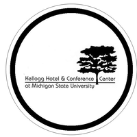

Work Experience
Little Caesars Enterprises Inc. - Audio Visual Engineering Intern
May-August 2020
As an AV Intern, my team (me and 2 full time AV Engineers) were
responsible for the maintenance, upkeep, and management of the AV
systems at Little Caesars Headquarters in Detroit, MI. The building runs
on a completely state of the art AV system that includes NVX, Crestron
Fusion, Dante audio, a fiber network, and more.

Kellogg Hotel and Conference Center - Audio Visual Technician
October 2018 - Present
The Kellogg Center hosts many different groups for their conferences,
meetings, social events, weddings, and more. My job is to set up, tear down,
and assist with all technical aspects each group orders. This includes working
with LCD projectors, PA systems, many different kinds of wireless and non
wireless microphones, and more.
SpringHill Camps - Event Production Technician
May-August 2018
SpringHill camps serve hundreds of youth campers from ages 6 to 19,
providing music, visual and live production events daily. I worked on the
production team as the camp’s only sound technician. I was able to interact
with musicians and administrators to coordinate stage tech and setup, and
production for live events. Additionally, I ran lights, projections, and used Qlab for production cues.